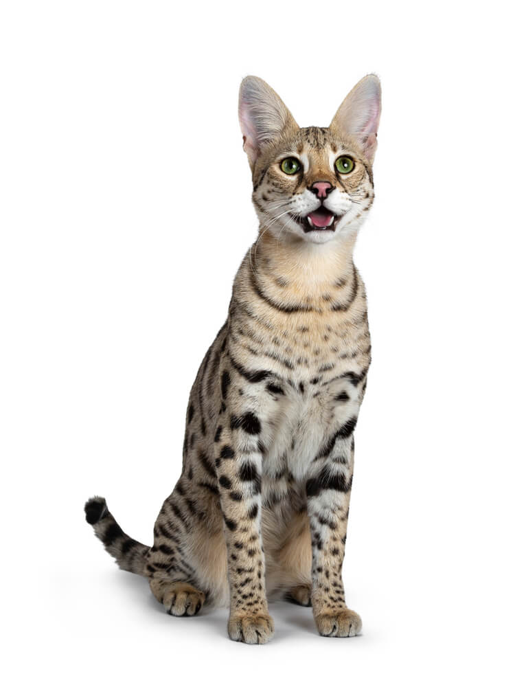

The Savannah cat breed is a striking and dominant-looking cat! With its exotic appearance of a wild cat, its fierce glaze, and its beautiful spotted coat, on the inside lays simply a loving, playful, and adventurous cat [1], [2], [3], [4].
Appearance
The Savannah cat breed's appearance is unusual. It is a domestic breed that closely resembles its ancestral source, the African Serval. Its exotic and wildcat-looking appearance is achieved by its specific spotted coat pattern. The pattern is a distinctive feature for this breed, but its color can vary from brown to black spots on a typically brown body color, only varying in shades. The Savannah cat breed is considered a shorthair large size cat breed, weighing from 5kg to 7kg. Although this breed is similar in size and weight to other breeds, these cats appear larger due to their height. Savannahs are taller than other cat breeds as they have longer than average legs. Along with their long legs, Savannahs have long, slender necks, a slim body, and large, wide ears. This breed can have a few eye colors, from gold to green, hazel, or brown.
Personality
The Savannah cat breed is particularly known for its extreme amount of energy and strong hunting instincts! This breed is very curious and seeks out adventure at every opportunity! As a very active breed, these cats need a great amount of daily exercise, playtime, and interaction, either with another animal or its human family. Running, playing fetch, doing tricks, and even swimming are all excellent playtime activities for this breed. They can also easily be trained to walk on a leash with a harness. Savannahs are extremely loyal and loving cats, creating a strong bond with their family members. They are a social breed, not shy of strangers, and they get along with older children and bigger pets. However, because of their strong hunting skills and instincts, it is not best to have small animals close by, such as fish, hamsters, birds, and similar. Savannahs have a mild temperament, and after receiving proper exercise, they do love to settle in for cuddles. Even though this breed is definitely not a lap cat, it will still show affection on its own terms.
History
The Savannah cat is a relatively new breed, with the first known Savannah being born on April 7, 1986. This unique breed originated from the accidental interbreeding of a female domestic cat and a male African Serval, resulting in a one-of-a-kind kitten. This kitten was named Miracle, but soon after, was renamed to Savannah, after which the whole breed got its name. Today, the Savannah cat breed is recognized by the categorization based on its generation from the African Sevral. The categories are defined by the percentage of the African Serval genes present. The categories include: F1, F2, F3, and F4 & beyond. The price for this breed varies a lot, from 1500€ up to even 25,000€, depending on rareness and African Serval DNA percentage, essentially, depending on the category of the Savannah.
F1 Savannah
Percentage of African Serval DNA: ~50%
Parentage: One parent is African Serval and the other is a domestic cat
Rarity and Cost: Very rare and expensive.
F2 Savannah
Percentage of African Serval DNA: ~25%
Parentage: One grandparent is African Serval
F3 Savannah
Percentage of African Serval DNA: ~12.5%
Parentage: One great-grandparent is African Serval
F4 & beyond Savannah
Percentage of African Serval DNA: less than 12.5%
[1], [2], [3], [4].